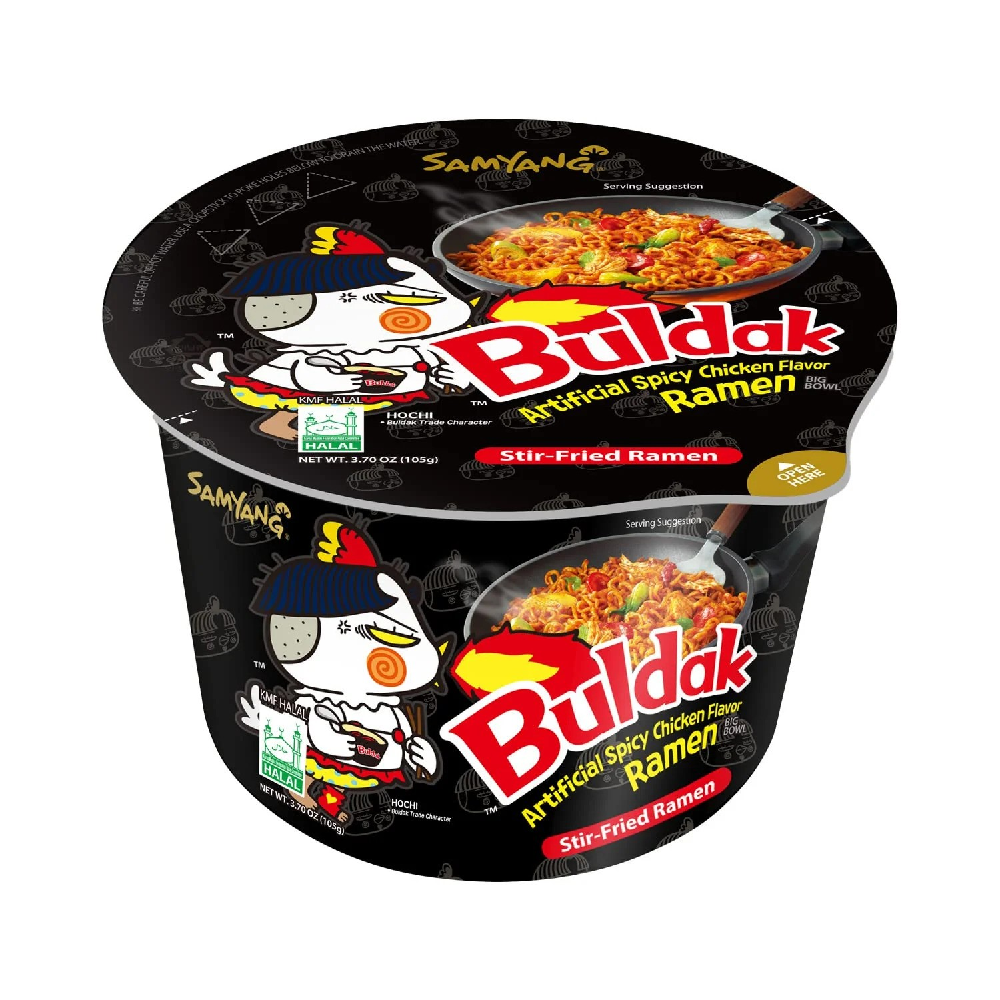

Instant Ramen

Description
This recipe is how to make delicious instant ramen very easily and cheaply.
Ingredients
- Instant Ramen Cup
- Boiling Water With Pot
Steps
- Put water into pot and set the stove to high
- Open instant ramen cup, take out the two packets and pour the boilin water to the line
- Put chopsticks on lid to hold close and let sit for 4 minutes
- Pour out the water into sink but keep the noodles in with chopsticks
- Pour the two packs in and mix around with chopsticks
- Enjoy!